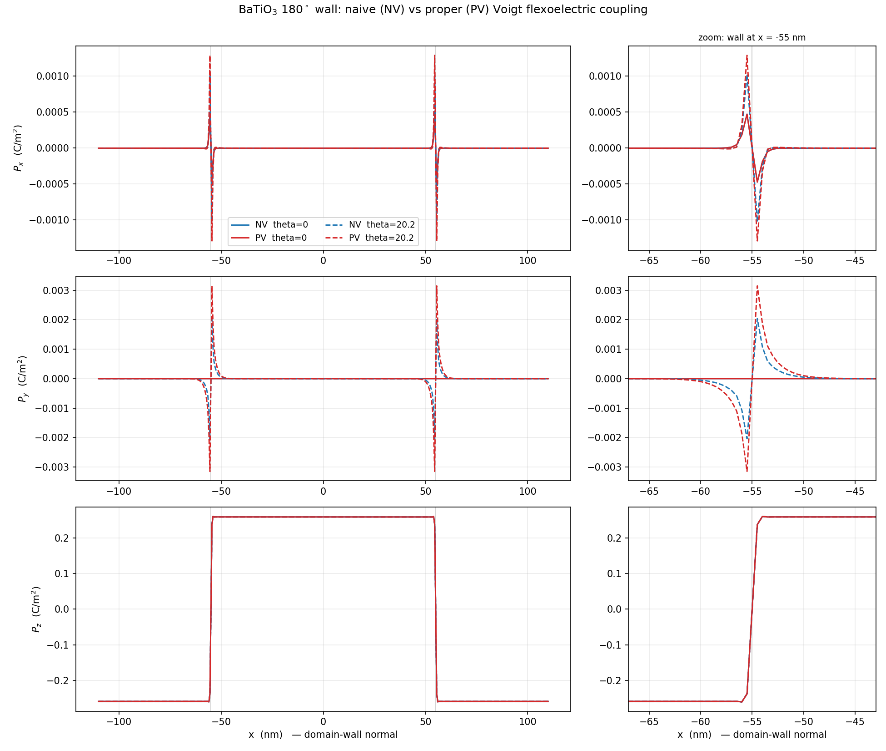

Flexoelectricity at a 180 degree domain wall
A 180 degree ferroelectric domain wall is, at the level of the bulk Landau energy, a pure Ising wall: the polarization reverses along one axis and the transverse components vanish everywhere. Gradient terms and flexoelectric coupling break that picture. Because the wall carries a large polarization gradient, the flexoelectric term converts that gradient into a strain, and the elastic response feeds back a transverse polarization. The wall acquires Bloch-like and Neel-like character.
This tutorial follows test/tests/flexo/flexo_180DW_theta15.i, which relaxes a 180 degree wall in BaTiO with flexoelectric coupling switched on.
Geometry and seed
The wall normal is , and the problem is quasi one-dimensional: a long bar with a single element across and .
[Mesh]
[gen]
type = GeneratedMeshGenerator
dim = 3
nx = ${n_z}
ny = ${n_xy}
nz = ${n_xy}
xmin = -${Z}
xmax = ${Z}
ymin = -${L}
ymax = ${L}
zmin = -${L}
zmax = ${L}
elem_type = HEX8
[]
[./cnode]
input = gen
type = ExtraNodesetGenerator
coord = '-${Z} -${L} -${L}'
new_boundary = 100
[../]
[]
The initial condition seeds the wall with a cosine profile in ,
[Functions]
[./DW_func]
type = ParsedFunction
symbol_names = 'A p'
symbol_values = '0.2 ${period}'
expression = 'A*cos(p*x)'
[../]
[]
with period chosen as so that one full period spans the bar. This produces two 180 degree walls in the periodic cell, which is what the profile plot below shows.
The parameter thetadeg at the top of the input rotates the crystal axes relative to the wall normal. This matters a great deal, as the results show.
The flexoelectric coupling
Three objects carry the physics. The material computes the flexoelectric contribution to the strain,
[./flexoelectric_eigenstrain]
type = ComputeRotatedCubicParentFlexoelectricStrain
polar_x = polar_x
polar_y = polar_y
polar_z = polar_z
eigenstrain_name = 'flexo'
block = '0'
[../]
the kernel supplies the corresponding driving force in the polarization equations, and a postprocessor reports the energy. All three are the Rotated variants, which apply the Euler rotation set by thetadeg to the flexoelectric tensor.
The transverse polarization components are monitored directly:
[Postprocessors]
[./dt]
type = TimestepSize
[../]
[./FbP]
type = RotatedBulkEnergyEighth
execute_on = 'timestep_end'
block = '0'
[../]
[./FgP]
type = RotatedWallEnergy
execute_on = 'timestep_end'
block = '0'
[../]
[./Fele]
type = ElectrostaticEnergy
execute_on = 'timestep_end'
block = '0'
[../]
[./Fela]
type = RotatedCubicParentFlexoelectricFullEnergy
execute_on = 'timestep_end'
polar_x = polar_x
polar_y = polar_y
polar_z = polar_z
block = '0'
[../]
[./Ftot]
type = LinearCombinationPostprocessor
pp_names = 'FbP FgP Fela Fele'
pp_coefs = ' 1 1 1 1'
execute_on = 'timestep_end'
[../]
[./maxPy]
type = NodalExtremeValue
variable = polar_y
[../]
[./minPx]
type = NodalExtremeValue
variable = polar_x
value_type = min
[../]
[./minPy]
type = NodalExtremeValue
variable = polar_y
value_type = min
[../]
[./maxPx]
type = NodalExtremeValue
variable = polar_x
[../]
[./perc_change]
type = EnergyRatePostprocessor
postprocessor = Ftot
execute_on = 'timestep_end'
dt = dt
[../]
[]
maxPy and minPy are the quantity of interest - the Bloch component of the wall.
What the relaxed wall looks like

Figure 1: Polarization profiles across the relaxed 180 degree wall. Bottom: reverses across each wall. Middle: , the Bloch component, is antisymmetric about the wall centre and is non-zero only for the rotated wall. Top: , the Neel component. Solid curves are , dashed are degrees. NV and PV denote two forms of the Voigt contraction in the flexoelectric coupling.
The structure of Figure 1 is the point of the tutorial:
(bottom) is the ordinary 180 degree reversal, saturating at C/m and essentially independent of .
(middle) is the Bloch component. It is antisymmetric about the wall centre, peaks at roughly C/m, and is identically zero for the unrotated wall. It exists only because the rotation makes the flexoelectric tensor couple the gradient to a transverse strain.
(top) is the Neel component and behaves similarly, though it is about a factor of three smaller here.
So the flexoelectric coupling does not merely perturb the wall - for it changes its character, from Ising to mixed Ising-Bloch-Neel.
flexo_180DW_theta15.i is a regression test and stops after a few steps, long before the transverse components have grown to their relaxed values - its maxPy only reaches about . The profiles above come from fully converged runs of the same model, in a larger cell, at and degrees, where the Terminator on perc_change has fired. To reproduce them, raise num_steps and end_time and let the energy rate converge.
A caution on conventions
The two colours in Figure 1 are two different ways of applying the Voigt contraction to the flexoelectric tensor. They give the same profile but transverse components that differ by tens of percent. The shear factor in the Voigt convention is easy to get wrong and the error is invisible in the Ising component - it shows up only in exactly the small transverse signal this tutorial is about. If you implement a new flexoelectric coupling, check it against a rotated wall rather than an unrotated one.